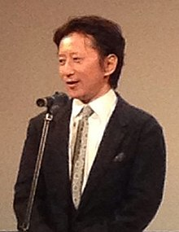

ผู้แต่ง
ฮิโรฮิโกะ อารากิ เกิดวันที่ 7 มิถุนายน พ.ศ. 2503 ในเมืองเซ็นได จังหวัดมิยางิ) เป็นนักเขียนการ์ตูนชาวญี่ปุ่น เปิดตัวครั้งแรกโดยใช้ชื่อ โทชิยูกิ อารากิ (ญี่ปุ่น: 荒木 利之; โรมาจิ: Araki Toshiyuki) ในปี พ.ศ. 2523 ด้วยผลงานการ์ตูนเรื่องสั้นเรื่อง Poker Under Arms และเริ่มต้นงานนักเขียนการ์ตูนมืออาชีพด้วยผลงานการ์ตูนซีรีส์ขนาดสั้นเรื่อง Cool Shock B.T., Baoh และ The Gorgeous Irene ผลงานการ์ตูนซีรีส์เรื่องยาวของอารากิที่เป็นที่รู้จักมากที่สุดคือเรื่อง โจโจ้ ล่าข้ามศตวรรษ ตีพิมพ์ครั้งแรกในนิตยสารโชเน็งจัมป์รายสัปดาห์ในปี พ.ศ. 2530 จนถึงปัจจุบันจำหน่ายได้มากกว่า 100 ล้านเล่ม และเป็นผลงานการ์ตูนที่เป็นที่รู้จักว่ามีการอ้างอิงจากดนตรีร็อกตะวันตกและประเทศอิตาลีอยู่บ่อยครั้ง ซึ่งทั้งสองอย่างเป็นสิ่งที่อารากิบอกว่าผูกพันเป็นอย่างมาก
